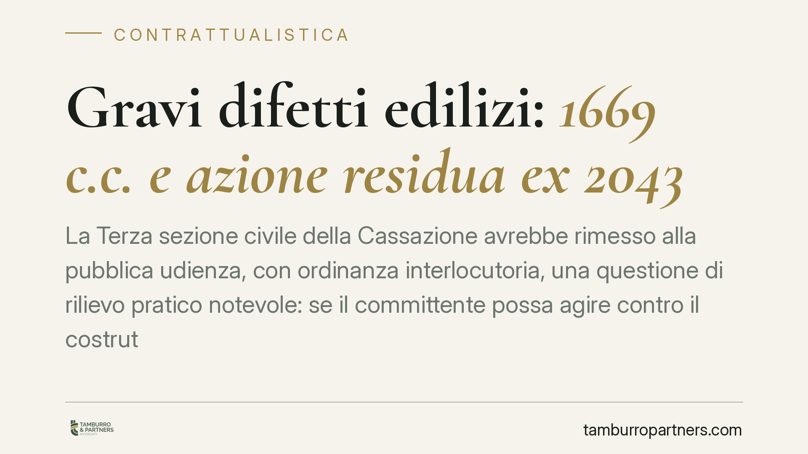

Gravi difetti edilizi: 1669 c.c. e azione residua ex 2043
La Terza sezione civile della Cassazione avrebbe rimesso alla pubblica udienza, con ordinanza interlocutoria, una questione di rilievo pratico notevole: se il committente possa agire contro il costruttore per gravi difetti invocando la responsabilità generale ex art. 2043 c.c. quando l'azione speciale ex art. 1669 c.c. è ormai prescritta. Il nodo nasce da un contrasto interno alla giurisprudenza. Chi costruisce, chi compra e chi dirige i lavori hanno interesse a seguirne l'esito.

Il caso e il rinvio alla pubblica udienza
Una proprietaria di immobile ha convenuto in giudizio l'impresa costruttrice e il direttore dei lavori per gravi difetti dell'edificio. La vicenda ha attraversato il Tribunale di Teramo e la Corte d'Appello dell'Aquila, per approdare in Cassazione.
La Terza sezione civile, anziché decidere in camera di consiglio, avrebbe disposto il rinvio alla pubblica udienza. È un segnale tecnico preciso: la questione è ritenuta di particolare importanza e merita una trattazione più ampia, spesso prodromica a un intervento nomofilattico.
*Nota redazionale: numero, sezione e data dell'ordinanza interlocutoria vanno confermati in banca dati prima di qualsiasi utilizzo processuale. Nel testo manteniamo il condizionale.*
I tre termini dell'art. 1669 c.c.: non confonderli
L'art. 1669 c.c. disciplina la responsabilità dell'appaltatore (e, per estensione giurisprudenziale, del costruttore-venditore) per rovina e gravi difetti dell'opera. La norma articola tre scadenze distinte, che la pratica spesso confonde:
- Decennio di garanzia: i gravi difetti devono manifestarsi entro dieci anni dal compimento dell'opera. È il perimetro temporale entro cui il vizio deve emergere.
- Denuncia entro un anno dalla scoperta: è un termine di decadenza. Il committente deve denunciare il difetto entro un anno da quando ne ha avuto conoscenza; in difetto, perde il diritto.
- Azione entro un anno dalla denuncia: è un termine di prescrizione. Una volta denunciato il vizio, l'azione va promossa entro un anno (art. 1669, co. 1, c.c.).
La distinzione tra decadenza e prescrizione non è un tecnicismo: incide su interruzione, sospensione e onere della prova. Il termine annuale per agire è prescrizione, non decadenza.
Il contrasto: 1669 c.c. e clausola generale ex 2043 c.c.
La natura della responsabilità ex art. 1669 c.c. è ricondotta dall'orientamento consolidato all'area extracontrattuale, ma proprio il rapporto con l'art. 2043 c.c. è oggetto di dibattito.
Il punto è questo: scaduti i termini speciali dell'art. 1669, il committente può rifugiarsi nella responsabilità aquiliana generale dell'art. 2043 c.c., soggetta alla prescrizione quinquennale ordinaria?
Le Sezioni Unite hanno affrontato la cornice dell'art. 1669 con una nota pronuncia del 2014; un successivo indirizzo del 2023 ha riaperto la questione della residua esperibilità dell'azione ex art. 2043. Il rinvio alla pubblica udienza nasce da questa divergenza.
*Nota redazionale: i numeri esatti della pronuncia delle Sezioni Unite del 2014 e dell'arresto del 2023 vanno verificati in banca dati e inseriti prima della pubblicazione. In mancanza di conferma, il riferimento all'anno va rimosso per non dare precisione apparente.*
Implicazioni pratiche per i diversi soggetti
Per il committente/acquirente: se la soluzione ammettesse l'azione ex art. 2043, chi ha lasciato decorrere i termini dell'art. 1669 disporrebbe di uno spazio ulteriore, entro la prescrizione quinquennale. L'ipotesi opposta restringerebbe la tutela ai soli presidi speciali.
Per l'impresa costruttrice: la questione pesa sulla stima del rischio residuo. Ammettere il ricorso all'art. 2043 significherebbe un orizzonte di esposizione più esteso rispetto alla scansione annuale dell'art. 1669.
Per il direttore dei lavori: la posizione resta collegata alla concreta imputazione del difetto. L'ampliamento del titolo di responsabilità inciderebbe anche sulla valutazione del suo operato.
Per le compagnie assicurative: polizze postuma decennale e RC professionale andrebbero lette alla luce dell'eventuale canale aquiliano, che modifica durata e ampiezza della copertura attesa.
Cosa fare in concreto
- Verificate subito i termini: ricostruite data di compimento dell'opera, momento della scoperta e data della denuncia. Da qui dipende quale tutela è ancora praticabile.
- Formalizzate la denuncia dei gravi difetti entro un anno dalla scoperta, con atto scritto e data certa, per non incorrere nella decadenza.
- Impostate la domanda in via graduata: domanda principale ex art. 1669 c.c. e, in subordine, domanda ex art. 2043 c.c., così da coprire entrambi gli esiti del contrasto.
- Documentate con CTP o perizia la natura "grave" del difetto e il nesso causale, a prescindere dal titolo invocato.
- Verificate ogni citazione giurisprudenziale in banca dati prima dell'uso processuale: finché l'ordinanza interlocutoria non è confermata nei suoi estremi, trattatela come riferimento provvisorio.
Disclaimer
Contributo informativo a cura di Tamburro & Partners - Avv. Giuseppe Tamburro. Non costituisce parere legale.
Ogni contratto ha il suo equilibrio.
Se vuoi una revisione delle clausole o una redazione su misura, scrivi allo studio. Ti rispondiamo entro un giorno lavorativo.